诸佛子。彼一切世界种。或有作须弥山形。或作江河形。或作回转形。或作漩流形。或作轮辋形。或作坛墠(shàn)形。或作树林形。或作楼阁形。或作山幢形。或作普方形。或作胎藏形。或作莲华形。或作佉勒迦形。或作众生身形。或作云形。或作诸佛相好形。或作圆满光明形。或作种种珠网形。或作一切门闼形。或作诸庄严具形。如是等。若广说者。有世界海微尘数。诸佛子。彼一切世界种。或有以十方摩尼云为体。或有以众色焰为体。或有以诸光明为体。或有以宝香焰为体。或有以一切宝庄严。多罗华为体。或有以菩萨影像为体。或有以诸佛光明为体。或有以佛色相为体。或有以一宝光为体。或有以众宝光为体。或有以一切众生。福德海音声为体。或有以一切众生。诸业海音声为体。或有以一切佛境界。清净音声为体。或有以一切菩萨。大愿海音声为体。或有以一切佛。方便音声为体。或有以一切刹庄严具。成坏音声为体。或有以无边佛音声为体。或有以一切佛。变化音声为体。或有以一切众生。善音声为体。或有以一切佛功德海。清净音声为体。如是等。若广说者。有世界海微尘数。
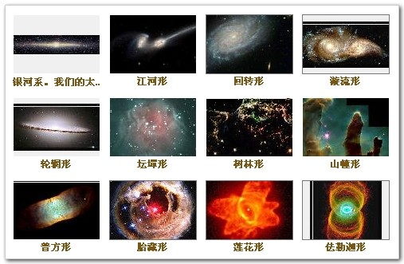
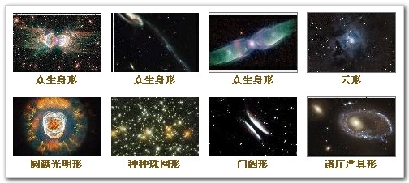
如来智慧。无处不至。何以故。无一众生。而不具有如来智慧。但以妄想颠倒执着。而不证得。若离妄想。一切智自然智无碍智。则得现前。佛子。譬如有大经卷。量等三千大千世界。书写三千大千世界中事。一切皆尽。所谓书写大铁围山中事。量等大铁围山。书写大地中事。量等大地。书写中千世界中事。量等中千世界。书写小千世界中事。量等小千世界。如是若四天下。若大海。若须弥山。若地天宫殿。若欲界空居天宫殿。若色界宫殿。若无色界宫殿。一一书写。其量悉等此大经卷。虽复量等大千世界。而全住在一微尘中。如一微尘。一切微尘。皆亦如是。时有一人。智慧明达。具足成就清净天眼。见此经卷。在微尘内。于诸众生。无少利益。即作是念。我当以精进力。破彼微尘。出此经卷。令得饶益一切众生。作是念已。即起方便。破彼微尘。出此大经。令诸众生。普得饶益。如于一尘。一切微尘。应知悉然。佛子。如来智慧。亦复如是。无量无碍。普能利益一切众生。具足在于众生身中。但诸凡愚。妄想执着。不知不觉。不得利益。尔时如来。以无障碍。清净智眼。普观法界一切众生而作是言。奇哉奇哉。此诸众生。云何具有如来智慧。愚痴迷惑。不知不见。我当教以圣道。令其永离妄想执着。自于身中。得见如来广大智慧。与佛无异。即教彼众生。修习圣道。令离妄想。离妄想已。证得如来无量智慧。利益安乐一切众生。
生死书注：本站挑选的这些星系图片来自科普网站的天文望远镜观察影像，可与上述经文中的世界种形状做对比。
哈勃天文望远镜形体如辆公共汽车，于1990年被送往距地面几百公里的环地轨道。它每周向地球传回约1200亿比特的信息，成为科学家探索宇宙的“功臣”。
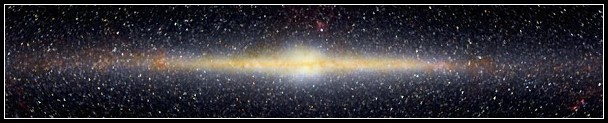
|
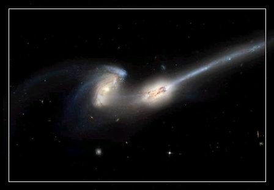 编号是NGC 4676的星系，距离我们约有三亿光年。（江河形） |
|
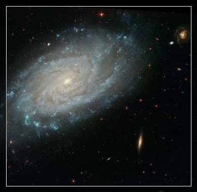 宏伟壮观的狮子座的“NGC 3370”螺旋星系（回转形） |
|
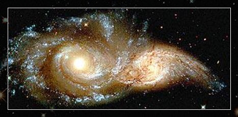 遥远的大犬星座的两个螺旋形星系相互碰撞（漩流形） |
|
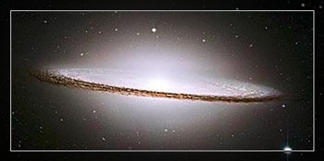 距地球两千八百万光年的宽边帽星系（轮辋形） |
|
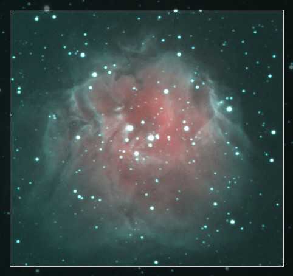 开放星团:Sharpless 212（坛墠(shàn 古代祭祀或会盟用的场地)形？） |
|
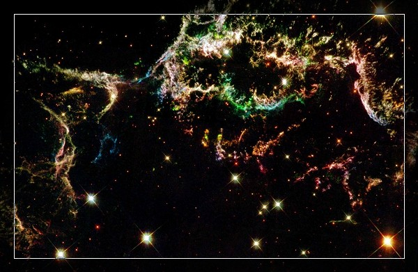 仙后座A的超新星遗骸，这张影像所显示区域的大小约在10光年左右，这颗死亡恒星的星光，是经过了一万年才传到地球呢（树林形） |
|
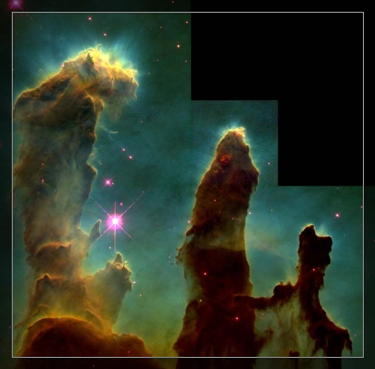 哈勃望远镜摄到的高度清晰云柱，最大的头尾两端有4光年的长度，一直是业余天文学家们最感兴趣的太空影象。（山幢形） |
|
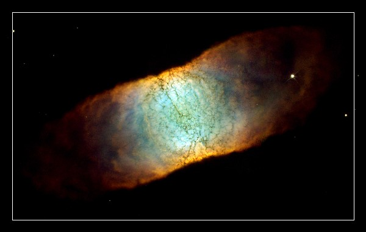 IC 4406方形星云（普方形） |
|
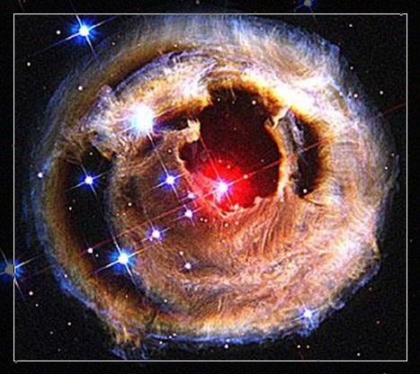 以凡高作品《星夜》命名的景象（胎藏形） |
|
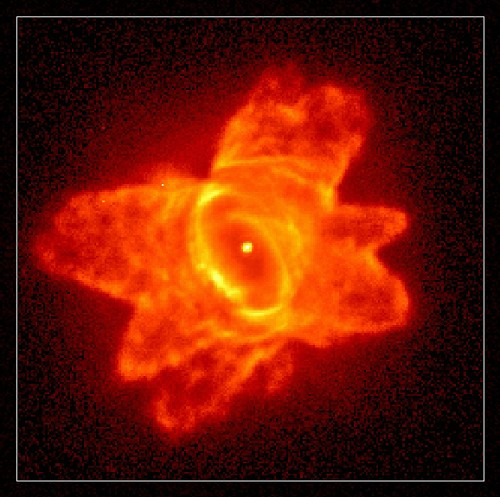 命名为PKS285-02的年轻星云（莲花形） |
|
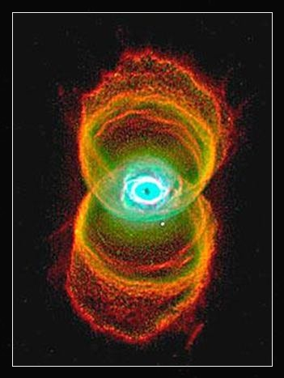 距地球八千光年的沙漏星云（佉勒迦形 【佉勒迦】此云着谷麦篅（chuán 一种盛粮食的圆囤）。 FROM:《翻译名义集》南宋·法云 著。） |
|
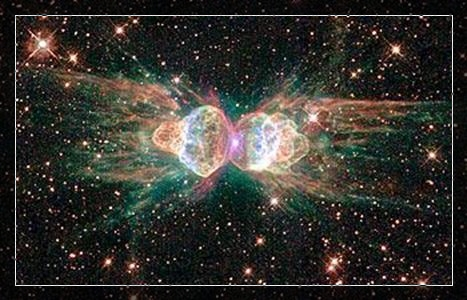 被命名为蚂蚁星云的Mz3（众生身形） |
|
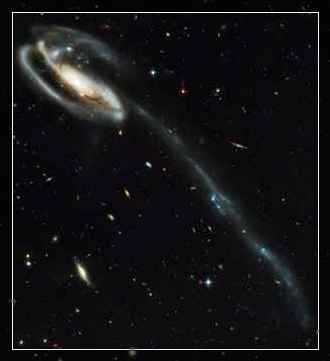 蝌蚪星系（众生身形） |
|
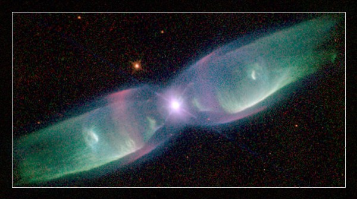 这是蝴蝶星云（M2-9）距离我们约2,100光年远。（众生身形） |
|
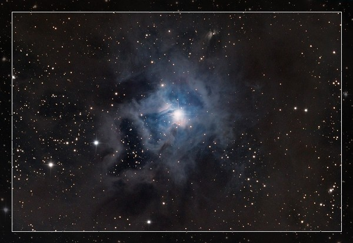 这些由星际尘埃及气体组成的云气，远远地盛开在1300光年远的仙王座恒星丰产区。有时它被称为彩虹星云，有时人们又叫她艾丽斯星云，而被编入目录的则是NGC 7023（云形） |
|
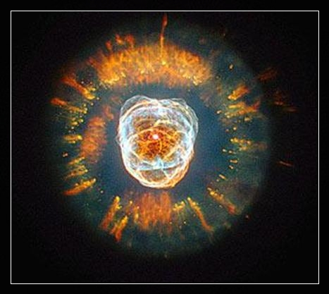 被称为爱斯基摩星云的NGC 2392（圆满光明形） |
|
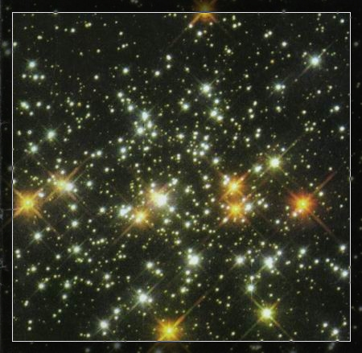 不规则星系大麦哲伦云（种种珠网形） |
|
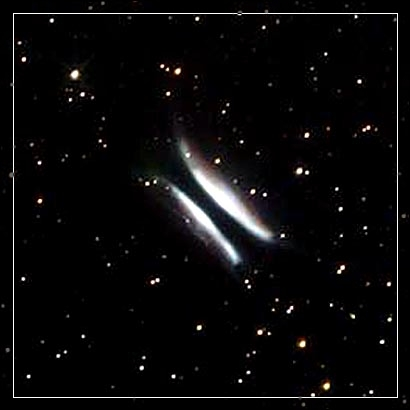 距地球6500光年的恒星“格麦兹的汉堡包”（门闼形） |
|
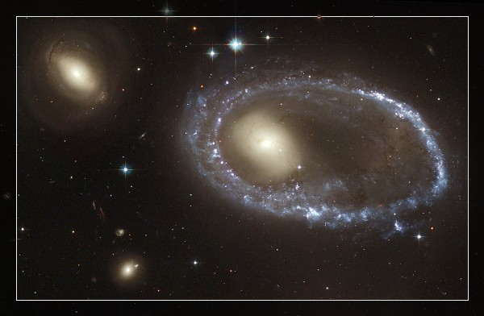 AM 0644-741有一个美丽的蓝色亮光环，人们称它是戒指星系。它的直径有15万光年，比我们的银河系要大很多，距离我们约300光年。（诸庄严具形） |
大方广佛华严经讲录
如来的智慧超越了时间、超越了空间，所以能够知道在一切不同时空里面的众生，现在科学家讲不同维次里面的众生，我们这个世间凡夫生活在三维空间，也叫三度空间。有四度空间、五度空间，乃至于无限度的空间。科学家认为理论上如是，事实上没有得到证明。现在事实证明有十一度空间存在。我们看黄念祖老居士在他的大经解后面有一篇文章，讲到现在的科学，但是在佛法里头肯定空间维次是无限的。为什么佛法如此的肯定呢？因为佛的智慧是圆满的。你看世间人讲理论上可能，但是事实上还没有观察到，这个也就是他知其当然，不知其所以然，他不晓得时空维次从哪里来，佛知道。
时空维次从什么地方来的？从妄想分别执着来的。诸位想想，世间这一切众生妄想分别执着无量无边，所以这个维次就无量无边。你了解这个事实真相，才有办法突破，科学家现在研究用什么方法能够突破时空，能够回到过去，能够进入将来，这确实是可能的。他们要用科学的方法，要用科学技术让时光倒流，看到过去，也能够加速度看到未来，他们在动脑筋用方法，这个就是不知道时空维次的来由。佛知道这个东西是从妄想分别执着而来的，换句话说你能够把妄想分别执着断掉，问题就解决了。佛心清净，没有妄想分别执着，所以无量无边的时空他都突破了，所以他知一切众生三世所有诸业。知三世突破时间，任何一个人，任何一个众生，从无量劫到现前，生生世世所作所为，他看得清清楚楚。他看你就像看你的档案一样，真的是有档案，档案是什么呢？阿赖耶识。你起一个最微细的念头，阿赖耶识里头已经有档案在了，你自己还不晓得，人家看得清清楚楚、明明白白。所以佛度众生能够契机就是这个道理，他了解，知道你什么时候会接受，什么时候你还不能接受。在完全排斥不能接受时，佛菩萨不来度你，暂时不跟你往来，免得你造罪业。你稍稍能够接受，还能听得一句两句，佛菩萨都不舍弃你，为你作增上缘，慈悲到了极处，真正是“佛氏门中，不舍一人”。所以你真正想学，不怕遇不到善知识，就怕自己不好学，好学决定遇善知识。遇到善知识还要自己真正好学，你这一生就有成就，就有结果，这个结果决定超越十法界。
我们在《百法明门》里面读到时分、方分，时分就是时间，方分就是空间，你看看佛把它排列在不相应行法里面，二十四种不相应行法这两种排列在其中。不相应行法它跟心法不相应，跟心所法也不相应，跟色法也不相应，但是它是从心心所、色法里头变现出来的这么一个现象，用现代的话来说，它是个抽象的现象绝非事实，但是你有妄想分别执着这个现象存在，你就没有办法突破。所以佛告诉我们这个现象是怎么来的，你知道它的来源你就有方法突破，什么方法呢？只要把妄想分别执着放下就突破了。
放下执着就突破相当一个层面，六道里面的时空突破了，所以只要不执着，二十八层天下面到阿鼻地狱你就能看得很清楚，就是六道里面的时空你突破了，六道之外的你没有办法，还是有个界限。换句话说，诸佛菩萨生活的状况你没有办法见到，那要怎么办呢？再把分别放下，分别放下了你突破的时空层面又大了，大到什么程度呢？十法界，声闻、缘觉、菩萨、十法界里面的佛，他们的生活状况你看到了、你听到了，但是一真法界法身大士他们的生活状况你一无所知，你还是有障碍。那要怎么办呢？佛告诉我们妄想，把妄想也放下、妄想也断掉，你突破的层面更大了，十法界突破了，一真法界里面诸佛菩萨生活状况你也一览无余！在哪里见呢？虚空法界处处见时时见，为什么？它没有障碍，“如来悉现毛孔中”。毛孔能现，毛端也能现，微尘也能现。毛孔正报里面最小的，微尘是依报里面最小的，大小的障碍没有了，大里面能现小，小里面能现大，佛在经上讲芥子纳须弥。芥菜籽很小像芝麻粒一样，须弥山很大，芥菜籽里面容纳须弥山，这是不思议境界。不但容纳须弥山，容纳须弥山有什么稀奇？容纳虚空法界。尽虚空遍法界在哪里？在毛孔里头，在毛端里面，在微尘里面，这都是事实真相。
所以你明心见性了，入法界就是入不思议解脱境界。解是解开，解开什么呢？解开所有一切的障碍，什么障碍都没有了，所以一毛端里面见虚空法界，十方诸佛刹土都在一毛端当中见，“如是无量皆具足”，无量无边的恒沙世界诸佛国土，具足是一丝毫欠缺都没有。我们在一毛孔里面看到虚空法界诸佛刹土，这里面所有的佛菩萨以种种不同的形相，种种不同的法门，在教化一切还没有觉悟的众生。
王言。大师。何者如来神通智行。答言。大王。沙门瞿昙神通行有六种。一者天眼通。二者天耳通。三者他心通。四者宿命通。五者如意通。六者漏尽通。
大王当知。沙门瞿昙所有天眼。过诸一切天龙八部声闻缘觉所有天眼。一切悉能明见十方功德智慧所成。悉见十方所有形色光明诸像若粗若细若近若远。一切悉见明了分别。其中所有一切众生。遍诸趣中生死相续。若业业果分别诸根悉知无余。于十方界诸佛如来所有庄严净妙国土亦见。其中菩萨声闻五道众生所修行业悉见无余。何以故。是眼清净。见无碍故。是眼不污。不着色故。是眼解脱。远离诸见烦恼缚故。是眼清净。性明了故。是眼无依。离所缘故。是眼不发。断烦恼故。是眼无垢。断诸恶故。是眼无瞖。断疑网故。是眼不起。断障碍故。是眼无贪嗔恚愚痴。能断一切诸结使故。是眼得明。照了法故。是眼念知。不行识故。是眼无上。究竟圣道故。是眼无碍。平等照众生故。是眼无染。性清净故。何以故。沙门瞿昙。住大悲心。善分别义。无有诤讼。随见闻说。舍诸不善。趣于道场。心无障碍。见悭贪者。能以财施。见犯戒者。劝摄诸根。见嗔恚者。劝忍不诤。见懈怠者。劝勤精进。见散乱者。示禅定乐。见愚痴者。教修智慧。故得天眼清净无障。是名天眼神通智行
大王当知。沙门瞿昙所有天耳。尽十方界。其中所有一切诸声。天龙鬼神乾闼婆阿修罗迦楼罗紧那罗摩睺罗伽人非人声。悉能分别。及知诸佛说法之声。菩萨声闻缘觉之声。一切耳根所能对声。乃至地狱畜生饿鬼蚊虻蝇蚤所有诸声。悉皆能闻。若诸众生心有所缘。善恶无记所出音声。一切解了。悉闻过去未来诸声。皆尽本际。何以故。沙门瞿昙。安住大悲。能闻诸声无有障碍。断诸烦恼习气灭故。是名天耳神通智行
大王当知。沙门瞿昙所有他心神通智行。所有众生。众生所摄。如其心念。所谓善心。不善心。无记心。顺烦恼心。背烦恼心。声闻心。辟支佛心。菩萨心。佛心。天心。龙心。夜叉心。乾闼婆心。阿修罗心。迦楼罗心。紧那罗心。摩睺罗伽心。人非人心。地狱心。畜生心。饿鬼心。阎罗处众生心。过去心。未来心。悉分别知。何以故。沙门瞿昙安住大悲。能知他心无碍无障。无诸烦恼故。断诸习气故。照一切法故。能如是解。是名他心神通智行
大王当知。沙门瞿昙所有宿命神通智行念知过去一生二生。乃至十生百生千生。无量百生。无量千生。无量百千生。及天地成坏。无量世界成。无量世界坏。无量成坏世界。无量成坏劫。知诸众生于是中生。如是种姓如是名字。如是色像如是寿命。如是受苦如是受乐。如是住处。如是衣服饮食。于是中死还是中生。于彼中死还彼中生。死此生彼。死彼生此。尽过去际悉知无余。又知过去尽过去际所有诸佛。如是眷属父母妻子兄弟姊妹。从初发心出家求道。修集愿行供养诸佛。教化调伏一切众生。坐菩提树成等正觉。如是名号。如是住处。如是胜坐。如是声闻。如是侍者。如是天。如是人。如是大众。如是外道。如是说法。如是度众生。如是寿命。如是灭度。如是正法住。如是像法住。悉能念知。何以故。安住大悲。善解作业故。是智无恼。安住禅定故。是智无畏。善摄智慧故。是智自然。不从他求现得善知故。是智正忆。毕竟不失故。是智功德。究竟大乘故。是智善根。从波罗蜜生到彼岸故。是名知宿命神通智行
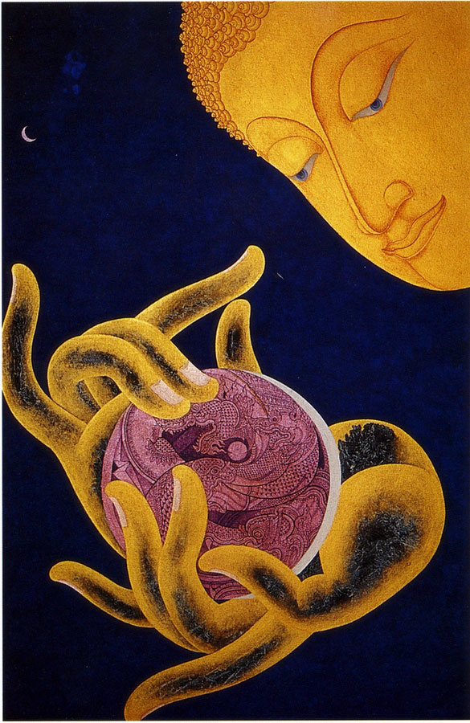
大王当知。沙门瞿昙如意神通智行者。为欲调伏邪见刚强难化众生令从正法。是故沙门瞿昙。能示种种神通教化。若色相若势力若变化。色相者。谓示佛色像。菩萨色像。缘觉色像。声闻色像。释提桓因梵天王四天王色像。转轮圣王色像。及余种种乃至畜生色像。随诸众生应见受化。悉能示现而为说法。若有众生恃身强力。而起憍慢嗔恚贡高。为欲调伏如是众生。示现大力如那罗延。以须弥山置一指端。掷着他方无量世界。或时断取三千大千世界下至水际。以一手举高至有顶住经一劫。现如是力。令彼憍慢自大众生贡高心息而为说法。变化者。以变化力。能变大海如牛迹水。大海不减牛迹不大。变牛迹水能成大海。若劫将尽火灾起时。应见水者即变为水。应见风者即变为风。水灾起时。应见火者即变为火。应见风者即变为风。风灾起时。应见水者即变为水。应见火者即变为火。作如是等种种变化。示诸众生令生欢喜。而为说法。何以故。是神通力。信欲精进禅定智慧诸法所摄。调伏柔和心得自在善修集故。是名如意神通
大王当知。沙门瞿昙漏尽通智行者。诸漏已尽远离一切烦恼习气。所谓欲漏有漏见漏无明漏。不同一切声闻辟支佛等所得漏尽。何以故。一切声闻辟支佛等得漏尽已。一切生处而有障碍。不具自在教化众生。是故有碍。沙门瞿昙无有障碍。是名漏尽智通。大王当知。沙门瞿昙。毕竟成就如是神通智行。是故我言。无有过失。王言。大师。云何如来四无碍智。答言。大王。四无碍智者。一者法无碍。二者义无碍。三者辞无碍。四者乐说无碍。大王当知。沙门瞿昙法无碍者。谓观众生。初发心行。多欲心行。少欲心行及善法恶法。世间法出世间法。可作法不可作法。有漏法无漏法。有为法无为法。黑法白法。生死法涅槃法。菩提平等。法性平等。如实而知。随所应闻。而为演说。是名法无碍智
尔时世尊于师子座上。自敷尼师坛结跏趺坐。端身正愿住对面念。入等持王妙三摩地。诸三摩地皆摄入此三摩地中。是所流故。尔时世尊正知正念。从等持王安祥而起。以净天眼观察十方殑伽沙等诸佛世界。举身怡悦。从两足下千辐轮相。各放六十百千俱胝那庾多光。从足十指。两趺两跟。四踝两胫。两腨两膝。两[月*坒]两股。腰胁腹背。脐中心上胸臆德字。两乳两腋。两肩两髆。两肘两臂。两腕两手。两掌十指。项咽颐颔。颊额头顶两眉两眼。两耳两鼻。口四牙。四十齿。眉间毫相。一一身分。各放六十百千俱胝那庾多光。此一一光各照三千大千世界。从此展转遍照十方殑伽沙等诸佛世界。其中有情遇斯光者。必得无上正等菩提。尔时世尊一切毛孔皆悉熙怡。各出六十百千俱胝那庾多光。是一一光各照三千大千世界。从此展转遍照十方殑伽沙等诸佛世界。其中有情遇斯光者。必得无上正等菩提。尔时世尊演身常光照此三千大千世界。从此展转遍照十方殑伽沙等诸佛国土。其中有情遇斯光者。必得无上正等菩提。
尔时世尊从其面门出广长舌相。遍覆三千大千世界。熙怡微笑。复从舌相流出无量百千俱胝那庾多光。其光杂色。从此杂色一一光中。现宝莲花。其花千叶皆真金色。众宝庄严。绮饰鲜荣。甚可爱乐。香气芬烈。周流普熏。细滑轻软。触生妙乐。诸花台中皆有化佛结跏趺坐。演妙法音。一一法音。皆说般若波罗蜜多相应之法。有情闻者必得无上正等菩提。从此展转。流遍十方殑伽沙等诸佛世界。说法利益亦复如是
尔时世尊不起本座。复入师子游戏等持。现神通力。令此三千大千世界六种变动。谓动极动等极动。踊极踊等极踊。震极震等极震。击极击等极击。吼极吼等极吼。爆极爆等极爆。又令此界东涌西没。西涌东没。南涌北没。北涌南没。中涌边没。边涌中没。其地清净光泽细软。生诸有情利益安乐。时此三千大千世界。所有地狱傍生鬼界。及余无暇险恶趣坑一切有情。皆离苦难。从此舍命。得生人中及六欲天。皆忆宿住。欢喜踊跃。同诣佛所。以殷净心。顶礼佛足。从此展转。周遍十方殑伽沙等诸佛世界。以佛神力。六种变动。时彼世界诸恶趣等一切有情。皆离苦难。从彼舍命。得生人中及六欲天。皆忆宿住。欢喜踊跃各于本界。同诣佛所顶礼佛足。时此三千大千世界。及余十方殑伽沙等世界有情。盲者能视。聋者能听。哑者能言。狂者得念。乱者得定。贫者得富。露者得衣。饥者得食。渴者得饮。病者得除愈。丑者得端严。形残者得具足。根缺者得圆满。迷闷者得醒悟。疲顿者得安适。时诸有情等心相向。如父如母。如兄如弟。如姊如妹。如友如亲。离邪语业命。修正语业命。离十恶业道。修十善业道。离恶寻思。修善寻思。离非梵行。修正梵行。好净弃秽。乐静舍諠。身意泰然。忽生妙乐。如修行者入第三定。复有胜慧欻尔现前。咸作是思。布施调伏安忍勇进寂静谛观。远离放逸。修行梵行。于诸有情。慈悲喜舍。不相挠乱。岂不善哉
尔时世尊在师子座。光明殊特。威德巍巍。映蔽三千大千世界。并余十方殑伽沙等诸佛国土。苏迷卢山。轮围山等。及余一切龙神天宫。乃至净居。皆悉不现。如秋满月晖映众星。如夏日轮光夺诸色。如四大宝妙高山王。临照诸山威光迥出。佛以神力。现本色身。令此三千大千世界一切有情皆悉睹见。时此三千大千世界无量无数净居诸天。下至欲界。四大王众天。及余一切人非人等。皆见如来处师子座。威光显曜如大金山。欢喜踊跃。叹未曾有。各持种种无量天花。香鬘涂香。烧香末香。衣服璎珞宝幢幡盖。伎乐诸珍。及无量种天青莲花。天赤莲花。天白莲花。天香莲花。天黄莲花。天红莲花。天金钱树花。及天香叶。并余无量水陆生花。持诣佛所。奉散佛上。以佛神力。诸花鬘等。旋转上踊。合成花台。量等三千大千世界。垂天花盖。宝铎珠幡。绮饰纷纶。甚可爱乐。时此佛土微妙庄严。犹如西方极乐世界。佛光晖映三千大千物类。虚空皆同金色。十方各等殑伽河沙诸佛世界。亦复如是。时此三千大千佛土。南赡部洲。东胜身洲。西牛货洲。北俱卢洲。其中诸人。佛神力故。各各见佛正坐其前。咸谓如来独为说法。如是四大王众天。三十三天。夜摩天。睹史多天。乐变化天。他化自在天。梵众天。梵辅天。梵会天。大梵天。光天。少光天。无量光天。极光净天。净天。少净天。无量净天。遍净天。广天。少广天。无量广天。广果天。无繁天。无热天。善现天。善见天。色究竟天。亦以世尊神通力故。各各见佛正坐其前。咸谓如来独为说法
尔时世尊不起于座。熙怡微笑。从其面门放大光明。遍照三千大千佛土。并余十方殑伽沙等诸佛世界。
尔时世尊，四众围绕，供养、恭敬、尊重、赞叹。为诸菩萨说大乘经，名无量义，教菩萨法，佛所护念。佛说此经已，结跏趺坐，入于无量义处三昧，身心不动。是时天雨曼陀罗华，摩诃曼陀罗华，曼殊沙华，摩诃曼殊沙华，而散佛上、及诸大众。普佛世界，六种震动。
尔时会中，比丘、比丘尼、优婆塞、优婆夷、天龙、夜叉、乾闼婆、阿修罗、迦楼罗、紧那罗、摩侯罗伽、人非人，及诸小王、转轮圣王。是诸大众，得未曾有，欢喜合掌，一心观佛。
尔时佛放眉间白毫相光，照东方万八千世界，靡不周遍，下至阿鼻地狱，上至阿迦尼吒天。于此世界，尽见彼土六趣众生，又见彼土现在诸佛。及闻诸佛所说经法。并见彼诸比丘、比丘尼、优婆塞、优婆夷、诸修行得道者。复见诸菩萨摩诃萨、种种因缘、种种信解、种种相貌、行菩萨道。复见诸佛般涅槃者。复见诸佛般涅槃后，以佛舍利、起七宝塔。
……
尔时，世尊从三昧安详而起，告舍利弗：‘诸佛智慧，甚深无量，其智慧门，难解难入，一切声闻、辟支佛、所不能知。所以者何。佛曾亲近百千万亿无数诸佛，尽行诸佛无量道法，勇猛精进，名称普闻。成就甚深未曾有法，随宜所说，意趣难解。舍利弗，吾从成佛已来，种种因缘，种种譬喻，广演言教，无数方便、引导众生，令离诸著。所以者何。如来方便知见波罗蜜、皆已具足。舍利弗，如来知见，广大深远，无量无碍，力、无所畏、禅定、解脱三昧、深入无际，成就一切未曾有法。舍利弗，如来能种种分别，巧说诸法，言辞柔软，悦可众心。舍利弗，取要言之，无量无边未曾有法，佛悉成就。
如是我闻。一时佛在忉利天、为母说法。尔时十方无量世界不可说不可说一切诸佛、及大菩萨摩诃萨、皆来集会。赞叹释迦牟尼佛能于五浊恶世现不可思议大智慧神通之力。调服刚强众生、知苦乐法。各遣侍者、问讯世尊。
是时如来含笑、放百千万亿大光明云。所谓大圆满光明云。大慈悲光明云。大智慧光明云。大般若光明云。大三昧光明云。大吉祥光明云。大福德光明云。大功德光明云。大皈依光明云。大赞叹光明云。放如是等不可说光明云已。又出种种微妙之音。所谓檀波罗蜜音。尸波罗蜜音。羼提波罗蜜音。毗离耶波罗蜜音。禅波罗蜜音。般若波罗蜜音。慈悲音。喜舍音。解脱音。无漏音。智慧音。大智慧音。狮子吼音。大狮子吼音。云雷音。大云雷音。
尔时，舍利弗承佛威神作是念：若菩萨心净，则佛土净者，我世尊本为菩萨时，意岂不净，而是佛土不净若此？佛知其念，即告之言：‘于意云何？日月岂不净耶！而盲者不见。’对曰‘不也！世尊！是盲者过，非日月咎。’‘舍利弗！众生罪故，不见如来国土严净，非如来咎；舍利弗！我此土净，而汝不见。’
尔时，螺髻梵王语舍利弗：‘勿作是念，谓此佛土以为不净，所以者何？我见释迦牟尼佛土清净，譬如自在天宫。’舍利弗言：‘我见此土丘陵坑坎，荆棘沙砾，土石诸山，秽恶充满。’螺髻梵王言：‘仁者心有高下，不依佛慧，故见此土为不净耳！舍利弗！菩萨于一切众生，悉皆平等，深心清净，依佛智慧，则能见此佛土清净。’
于是佛以足指按地，即时三千大千世界，若干百千珍宝严饰，譬如宝庄严佛，无量功德宝庄严土，一切大众叹未曾有！而皆自见坐宝莲华。佛告舍利弗：‘汝且观是佛土严净？’舍利弗言：‘唯然，世尊！本所不见，本所不闻，今佛国土严净悉现。’佛语舍利弗：‘我佛国土，常净若此，为欲度斯下劣人故，示是众恶不净土耳！譬如诸天，共宝器食，随其福德，饭色有异；如是舍利弗，若人心净，便见此土功德庄严。’
当佛现此国土严净之时，宝积所将五百长者子，皆得无生法忍，八万四千人皆发阿耨多罗三藐三菩提心。佛摄神足，于是世界，还复如故；求声闻乘，三万二千诸天及人，知有为法，皆悉无常，远尘离垢，得法眼净；八千比丘，不受诸法，漏尽意解。
大般涅槃经卷第二十二：尔时世尊告光明遍照高贵德王菩萨摩诃萨言……善男子。如来今于拘尸那城娑罗双树间。示现倚卧师子之床欲入涅槃。令诸未得阿罗汉果众弟子等及诸力士生大忧苦。亦令天人阿修罗乾闼婆迦楼罗紧那罗摩睺罗伽等大设供养。欲使诸人以千端叠缠裹其身。七宝为棺盛满香油。积诸香木以火焚之。唯除二端不可得烧。一者儭身。二最在外。为诸众生分散舍利以为八分。一切所有声闻弟子。咸言如来入于涅槃。当知如来亦不毕定入于涅槃。何以故。如来常住不变易故。
大般涅槃经后分卷下：迦叶答言。如来之身金刚坚固。常乐我净不可沮坏。德香芬馥若栴檀山。作是语已涕泗交流至佛棺所。尔时如来大悲平等。为迦叶故棺自然开。白氎千张及兜罗绵皆即解散。显出三十二相八十种好真金紫磨坚固色身。迦叶与诸弟子见已。闷绝躄地喑咽哀哽。良久乃苏涕泣盈目。与诸弟子徐上香楼近佛棺边。复更喑咽号哭悲哽。即以所得香花幡盖宝幢璎珞。音乐弦歌哀号供养。即以香泥香水灌洗如来金色之身。烧香散花哀泣供养。灌洗已讫。迦叶与诸弟子。持其所得妙兜罗绵缠于如来紫磨色身。次以旧绵缠新绵上。兜罗缠已。复以所得白氎千张。次第相重于兜罗上缠如来身。缠白氎已复持旧氎。着新氎上次第相缠。总缠已讫。棺门即闭。
……尔时拘尸城内有四力士。璎珞严身持七宝炬。大如车轮焰光普照。以焚香楼荼毗如来。炬投香楼自然殄灭。迦叶告言。大圣宝棺三界之火所不能烧。何况汝力而能烧耶。城内复有八大力士。更持七宝大炬光焰。一切将投棺所亦皆殄灭。城内复有十六极大力士。各持七宝大炬来投香楼亦悉殄灭。城内复有三十六极大。力士各持七宝大炬来投亦皆殄灭。尔时迦叶告诸力士一切大众。汝等当知。纵使一切天人所有炬火。不能荼毗如来宝棺。汝等不须劳苦强欲为作。尔时城内士女天人大众复重悲哀。各以所持号泣供养。一时礼拜右绕七匝。悲号大哭声震三千。尔时如来以大悲力。从心胸中火踊棺外。渐渐荼毗经于七日。焚妙香楼尔乃方尽。……
尔时楼逗普为天人一切大众。与城内人共于棺所。徐举白氎及兜罗绵。其迦叶等白氎千张火全不烧。其城内人白氎千张。除外一重余者灰烬。其兜罗绵宛然如故。尔时楼逗取此白氎及兜罗绵细破分之。与诸大众令起宝塔而供养之。楼逗复取氎灰亦细分众。令起宝塔而供养之。
生死书注：氎 dié，细毛布，细棉布。
释迦牟尼佛临涅槃的时候，回答了光明遍照高贵德王菩萨的问题，顺便预言说，如来涅槃焚化后，缠裹金身的最里面一层和最外面一层白氎不会焚化。
不久，如来进入了涅槃，人们却不能用凡火点燃如来宝棺，如来就自己从心胸中踊出三昧真火焚化，真火烧了七日。裹在最里面的迦叶等人的一千张白氎没有烧毁，拘尸那城的居士百姓们供养的白氎的最外面一层也没有烧毁，与佛陀涅槃前的自我预言一致。
当代高僧虚云老和尚的徒弟具行禅人，念佛功夫高深，预知时至，也是心出三昧真火，燃身供佛。具行禅人的木鱼、蒲团、僧鞋和肉身化为灰烬，而所穿的袈裟却依然如故。在《虚云法师年谱》一书中有此动人故事。
般涅槃经卷第三十：时彼城中有大长者无有继嗣。供事六师以求子息。其后不久妇则怀妊。长者知已。往六师所欢喜而言。我妇怀妊男耶女耶。六师答言。生必是女。长者闻已心生愁恼。……尔时长者即与是人来诣我所。头面作礼右绕三匝。合掌长跪而作是言。世尊。于诸众生平等无二怨亲一相。我为爱结之所系缚。于怨亲中未能无二。我今欲问如来世事。深自愧惧未敢发言。世尊。我妇怀妊六师相言。生必是女。是事云何。佛言。长者。汝妇怀妊是男无疑。其儿生已福德无比。尔时长者闻我语已生大欢喜便退还家。尔时六师闻我玄记生者必男有大福德。心生嫉妒以庵罗果和合毒药。持往其家语长者言。快哉瞿昙。善说其相汝妇临月可服此药。服此药已儿则端正产者无患。长者欢喜受其毒药与妇令服服已寻死。六师欢喜周遍城市高声唱言。沙门瞿昙。记彼长者。妇当生男其儿福德天下无胜。今儿未生母已丧命。尔时长者复于我所生不信心。即依世法殡殓棺盖送至城外。多积干薪以火焚之……我时到已坐师子座。长者难言。所言无二可名世尊。母已终亡云何生子。我言。长者卿于尔时都不见问母命修短。但问所怀为是男女。诸佛如来发言无二。是故当知。定必得子。是时死尸火烧腹裂。子从中出端坐火中。犹如鸳鸯处莲花台。六师见已复作是言。妖哉瞿昙。善为幻术。长者见已心复欢喜呵责六师。若言幻者汝何不作。我于尔时寻告耆婆。汝往火中抱是儿来。耆婆欲往。六师前牵语耆婆言。瞿昙沙门。所作幻术未必常尔。或能不能如其不能脱相烧害。汝今云何信受其言。耆婆答言。如来使入阿鼻地狱所有猛火尚不能烧。况世间火。尔时耆婆前入火聚。犹入清凉大河水中。抱持是儿还诣我所授儿与我。我受儿已告长者言。一切众生寿命不定如水上泡。众生若有殷重业果。火不能烧毒不能害。是儿业果非我所作。时长者言。善哉世尊。是儿若得尽其天命。惟愿如来为立名字。佛言。长者。是儿生于猛火之中。火名树提。应名树提。尔时会中见我神化。无量众生发阿耨多罗三藐三菩提心。尔时六师周遍六城不得停足惭愧低头。
大般涅槃经卷第三十三：我于一时住王舍城。善星比丘为我给使。我于初夜为天帝释演说法要。弟子法应后师眠卧。尔时善星以我久坐心生恶念。时王舍城小男小女若啼不止。父母则语汝若不止。当将汝付薄拘罗鬼。尔时善星反被拘执而语我言。速入禅室薄拘罗来。我言。痴人。汝常不闻如来世尊无所畏耶。尔时帝释即语我言。世尊。如是人等亦复得入佛法中耶。我即语言。憍尸迦。如是人者得入佛法。亦有佛性当得阿耨多罗三藐三菩提。我虽为是善星说法。而彼都无信受之心。善男子。我于一时在迦尸国尸婆富罗城。善星比丘为我给使。我时欲入彼城乞食。无量众生虚心渴仰欲见我迹。善星比丘寻随我后而毁灭之。既不能灭而令众生生不善心。我入城已于酒家舍。见一尼干踡脊蹲地飡食酒糟。善星比丘见已而言。世尊。世间若有阿罗汉者是人最胜。何以故。是人所说无因无果。我言。痴人。汝常不闻阿罗汉者。不饮酒不害人不欺诳不偷盗不淫妷。是人杀害父母食啖酒糟。云何而言是阿罗汉。是人舍身必定当堕阿鼻地狱。阿罗汉者永断三恶。云何而言是阿罗汉。善星即言。四大之性犹可转易。欲令是人必堕阿鼻无有是处。我言痴人。汝常不闻诸佛如来诚言无二。我虽为是善星说法。而彼绝无信受之心。善男子。我于一时与善星比丘住王舍城。尔时城中有一尼干名曰苦得。常作是言众生烦恼无因无缘。众生解脱亦无因缘。善星比丘复作是言。世尊。世间若有阿罗汉者苦得为上。我言。痴人。苦得尼干实非罗汉。不能解了阿罗汉道。善星复言。何因缘故阿罗汉人于阿罗汉而生嫉妒。我言。痴人。我于罗汉不生嫉妒。而汝自生恶邪见耳。若言苦得是罗汉者。却后七日当患宿食腹痛而死。死已生于食吐鬼中。其同学辈当舁其尸置寒林中。尔时善星即往苦得尼干子所语言。长老。汝今知不。沙门瞿昙记汝七日当患宿食腹痛而死。死已生于食吐鬼中。同学同师当舁汝尸置寒林中。长老。好善思惟作诸方便。当令瞿昙堕妄语中。尔时苦得闻是语已即便断食。从初一日乃至六日。满七日已便食黑蜜。食黑蜜已复饮冷水。饮冷水已腹痛而终。终已同学舁其尸丧置寒林中。即受食吐饿鬼之形在其尸边。善星比丘闻是事已。至寒林中见苦得身。受食吐形在其尸边踡脊蹲地。善星语言。大德死耶。苦得答言。我已死矣。云何死耶。答言。因腹痛死。谁出汝尸。答言。同学。出置何处。答言。痴人。汝今不识是寒林耶。得何等身。答言。我得食吐鬼身。善星。谛听如来善语真语时语义语法语。善星。如来口出如是实语。汝于尔时云何不信。若有众生不信如来真实语者。彼亦当受如我此身。尔时善星即还我所。作如是言。世尊。苦得尼乾命终之后生三十三天。我言痴人。阿罗汉者无有生处。云何而言苦得生于三十三天。世尊。实如所言苦得尼干。实不生于三十三天。今受食吐饿鬼之身。我言。痴人。诸佛如来诚言无二。若言如来有二言者无有是处。善星即言。如来尔时虽作是说我于是事都不生信。善男子。我亦常为善星比丘说真实法。而彼绝无信受之心。善星比丘多有眷属。皆谓善星是阿罗汉是得道果。我欲坏彼恶邪心故。记彼善星以放逸故堕于地狱。善男子。汝今当知如来所说真实无二。何以故。若佛所记当堕地狱。若不堕者无有是处。声闻缘觉所记莂者。则有二种或虚或实。如目犍连在摩伽陀国遍告诸人。却后七日天当降雨时竟不雨。复记牸牛当生白犊。及其产时乃产驳犊。记生男者后乃产女。
《狮吼棒喝》大藏寺祈竹仁波切问答节录
佛像等圣物被毁，不代表它们没有力量。佛法开示无常之理，世间上的一切事物，无不经历产生、维持及消失的过程，圣物是如此，世俗的人、事及物也是如此。即使本师释迦牟尼的应化色身，也在二千多年前示现入灭的现像。世界上的圣物，是令众生积聚福德资粮的福田。众生能藉着对它们观仰、顶礼、供养及绕行等修持而积集成佛的资粮。但它们的住世与否，取决于众生的业力及福德因缘。如果众生没有足够的福德，它们便会不复存在，例如被毁或在天灾人祸中消失。拉萨的大昭寺内，供着一尊世上最神圣的佛像。这佛像是悉达多太子十二岁的等身像，依着太子当时的容貌塑制而成，后来传入汉地，又在汉地文成公主入嫁西藏时传至拉萨。在历代的预言中都有述及，即使这尊最神圣的佛像，最终也会沉入地底，自人间世界消失。那是因为众生之共业所致，我们不再有福德得见这尊神圣的佛像，并不是说佛陀没有力量保护他自己的身像，也不是诸佛没有悲心的缘故。